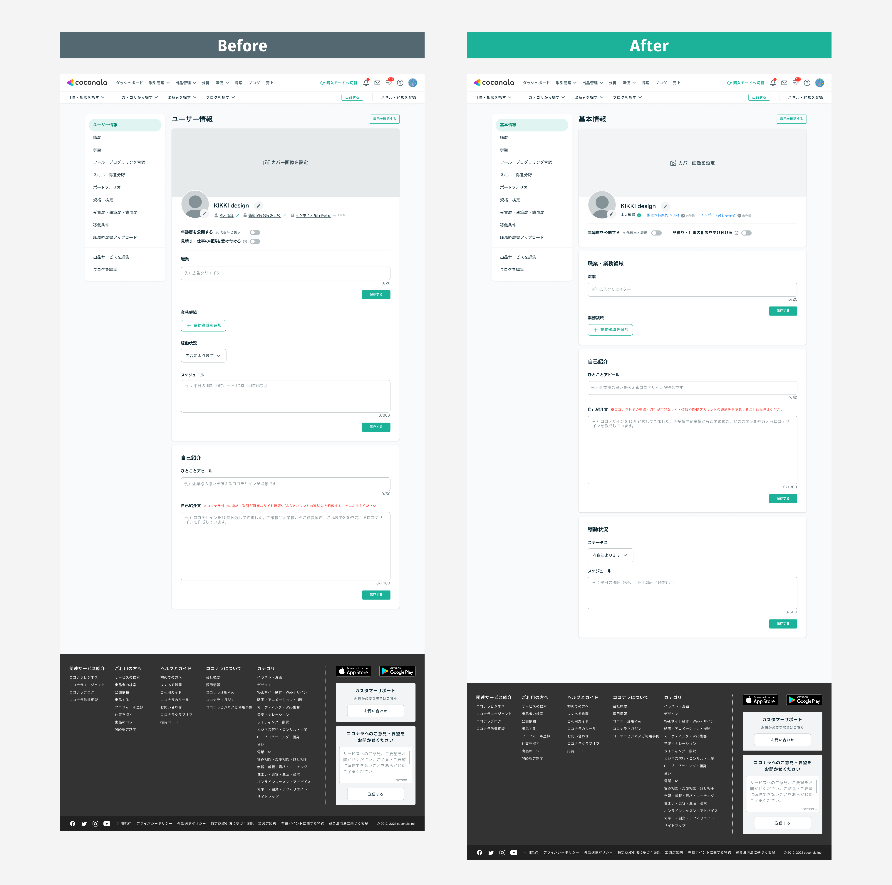
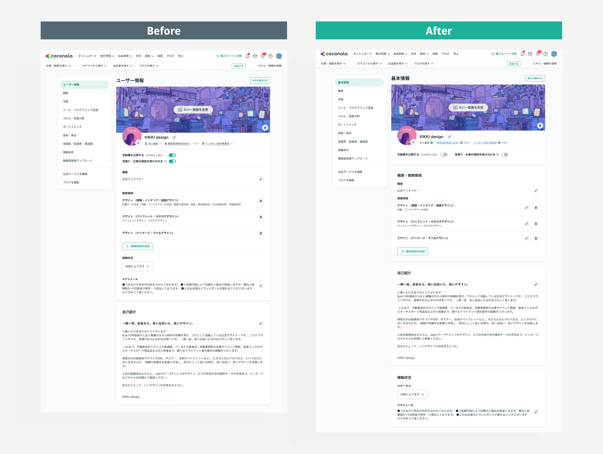
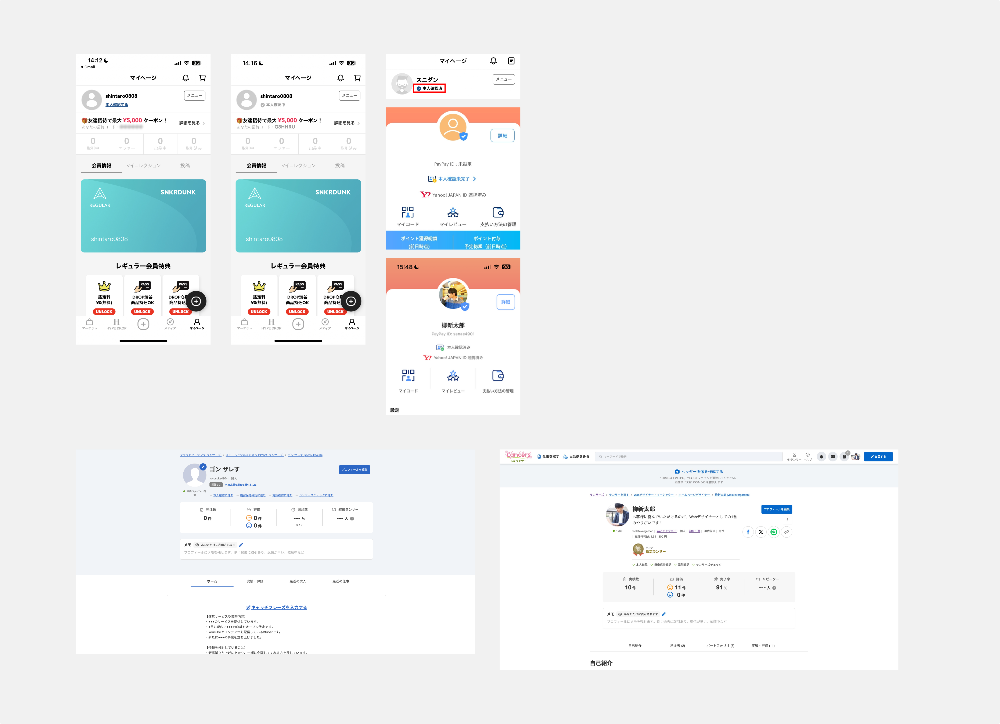
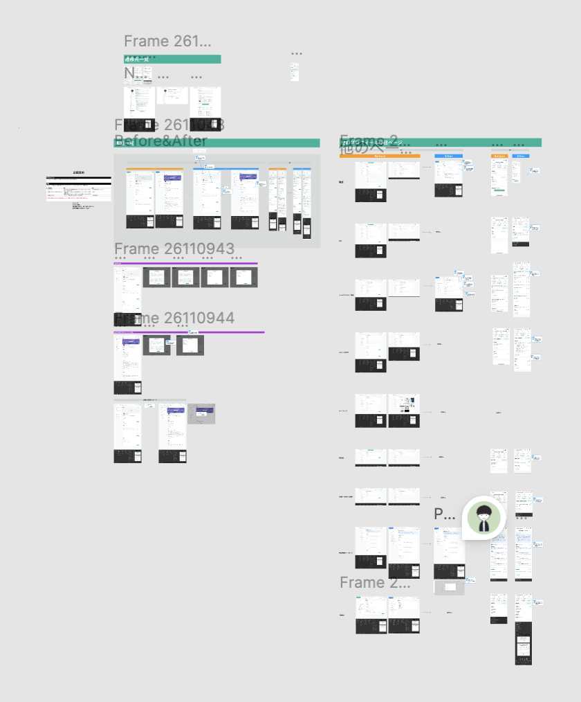
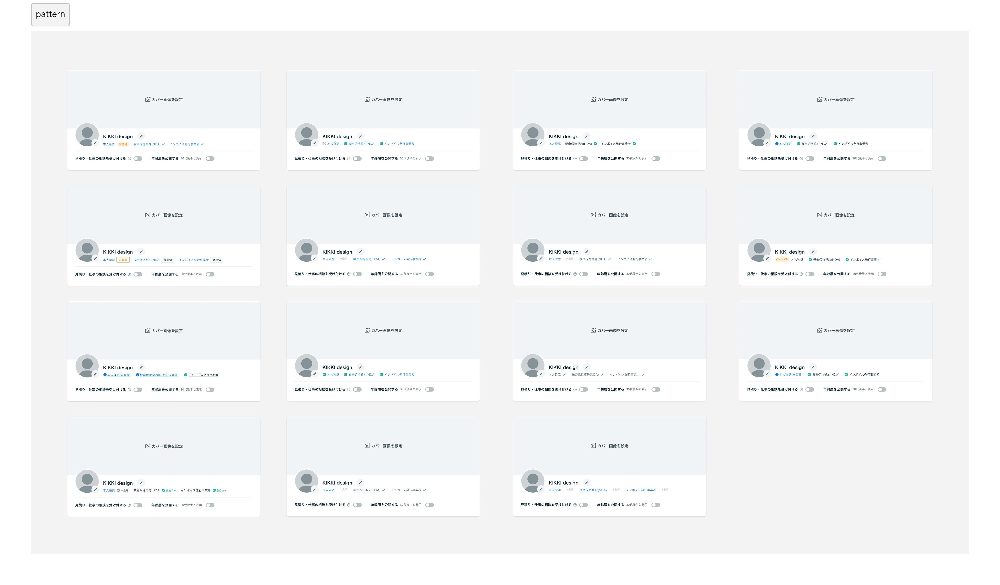
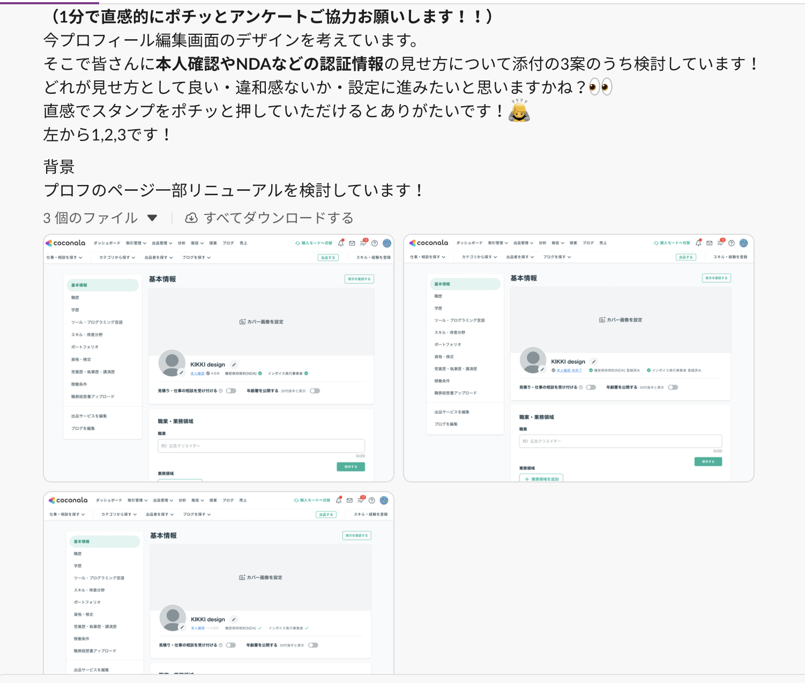

プロフィール画面の情報設計最適化&本人確認の実施率UP PJ


Overview
プロフィールの情報がカテゴリに沿って整理されておらず、本人確認等のステータスが実施済みなのかまだできてないのかが分かりづらいUIだった
- プロフィールトップページの情報がカテゴリに沿って分かれておらず、ユーザーが必要な情報にたどり着きにくい状態だった。また、本人確認・機密保持契約などの完了状態が判断できず、事業的にやって欲しい機能をうまく促進できてなかった
情報設計の最適化と本人確認ステータスの入力促進
- 新卒で初めて担当したプロジェクト。情報をカテゴリ単位で再整理し、本人確認の完了・未完了が直感的に伝わるUIを設計。他ページとの整合性が取れていない箇所も自ら発見・提案し、スコープを拡大して対応した。
本人確認率が 5% 向上
- リニューアル後の計測で本人確認率が 5% 向上。UIの見せ方が行動を変えることを、初プロジェクトで実証した。
Summary
情報設計から本人確認UIの工夫まで担い、初プロジェクトで本人確認率 5% 向上を達成
😟 課題
情報の散在と
ステータスが完了・未完了かわからない
- プロフィールの情報がカテゴリに沿って整理されておらず、わかりづらかった
- 本人確認・機密保持契約の完了状態がUIから判断できず、信頼性の訴求ができていなかった
😊 貢献
情報設計・UI設計・提案を
一気通貫で担当
- プロフィール情報をカテゴリ単位で再整理し、情報設計を再定義
- 本人確認の完了・未完了が直感的に伝わるUIを設計・提案
- 他ページとの整合性が取れていない箇所を自ら発見し、スコープ拡大を提案
🌱 結果・学び
本人確認率 5% 向上・
情報設計の重要性を体得
- 本人確認率が 5% 向上。UIの見せ方が行動に直結することを実証
- 初プロジェクトで情報設計から提案・検証まで一気通貫で経験
Process
01
リサーチ
02
情報設計・UI設計
03
レビュー・提案
Research
1. 他社調査
競合・類似サービスのプロフィールページ構造を調査し、情報設計のパターンと本人確認ステータスの見せ方を比較分析。改善の方向性を定めるインプットをした。

2. 現状のプロフィールページを分析し、課題を定義
プロフィールトップページの情報構造を洗い出し、カテゴリに沿って整理されていない箇所を特定。あわせて本人確認・機密保持契約のステータスがUIから判断できない状態を課題として認識
Planning & Requirements
1. 情報をカテゴリ単位で再整理し、構造を定義
プロフィールに掲載される情報をカテゴリごとに分類し、ユーザーが必要な情報にたどり着きやすい構造を定義。情報の優先度と配置のルールを整理してから設計に入った。
2. 他ページとの整合性改善を自ら提案
プロフィールtopがそれ以外のページと整合性が取れていない箇所を発見し、あわせて改善することを自ら提案。当初スコープ外だったが、全体の一貫性を保つために必要と判断し推進した。

Design
1. 本人確認ステータスが直感的に伝わるUIの設計
本人確認・機密保持契約の完了・未完了が一目でわかるUIを設計。完了状態の視覚的な強調と、未完了時の行動喚起を両立させた見せ方を工夫した。

2. アンケートでデザイン案を検証し、方向性をフィックス
デザイン案に対してアンケートを実施し、本人確認ステータスの完了・未完了が一目でわかるのはどちらかヒアリングを行った。定性的な意見を集めることで納得感のある提案ができた
